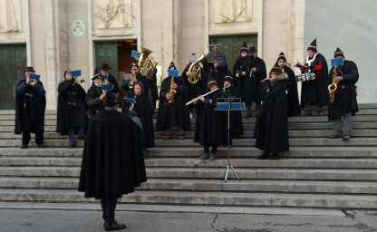
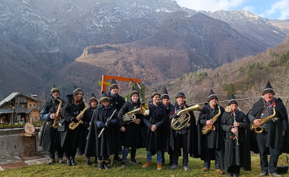
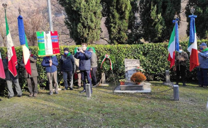
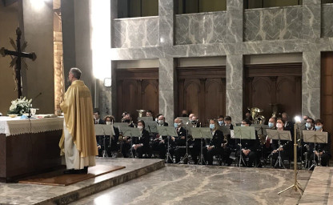
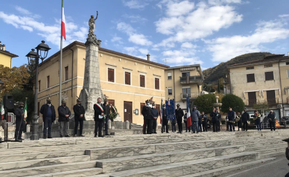
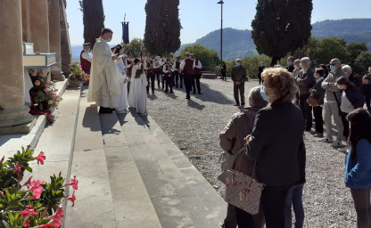
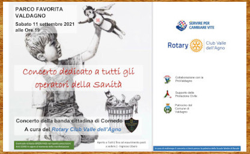
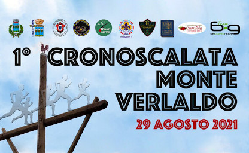
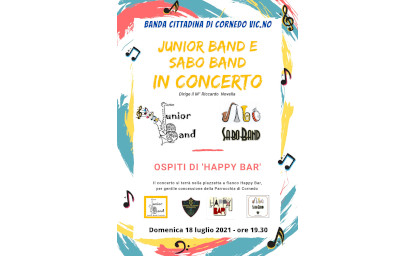

12 Dicembre 2021
Mercatini di Natale a Cornedo

I Tabari della Banda tornano ad allietare i Cornedesi durante i tradizionali Mercatini di Natale con un miniconcerto di musiche Natalizie.
La banda era presente anche con uno stend nel quale proponeva i prodotti della Cooperativa di Consumo di Cornedo ed invitava i più piccoli a provare i vari strumenti a percussione per farli divertire diventando protagonisti della musica
5 Dicembre 2021
Campodalbero e i suoi presepi

Alla tradizionale festa Campodalbero e i suoi presepi siamo stati presenti con il "Gruppo Dei Tabari".
La banda in prossimità delle feste Natalizie dismette la divisa e veste il "Tabaro", il clima natalizio diventa subito palpabile, se lo si unisce poi ad una bella passeggiata tra i presepi con paesaggi fantastici, il Natale è qui.
Ringraziamo gli amici di "Campodalbero Guarda al Futuro" per questa bella esperienza
5 Dicembre 2021
Commemorazione caduti delle Ronare a Priabona

Per quest'anno la presenza della Banda alla Commemorazione dei caduti delle Ronare non è stata ancora possibile. La solennità del momento è stata comunque garantita dalla presenza del nostro trombettiere Francesco che ha reso gli onori con gli squilli di tromba ai partigiani caduti: Benetti Primo, Cattelan Giovanni, De Momi Rino e Peruffo Domenico.
21 Novembre 2021
Festa di Santa Cecilia

La Banda è tornata a festeggiare la Santa patrona della musica sacra animando la celebrazione eucaristica delle 10.30 nella chiesa parrocchiale di Cornedo.
Al termine della messa la banda ha offerto un breve concerto ai fedeli presenti.
I festeggiamenti sono proseguiti con il pranzo sociale presso il ristorante "Roccolo Rossato" e con l'elezione del nuovo consiglio direttivo
07 Novembre 2021
Celebrazione del IV Novembre

Ritornano le celebrazioni delle feste nazionali in presenza, con la Banda che accompagna la sfilata. Possiamo suonare solamente nei momenti in cui siamo fermi, ma il corteo marcia al ritmo delle nostre percussioni
10 Ottobre 2021
Processione del Santo Rosario

Finalmente siamo tornati a sfilare lungo le strade del nostro paese, anche se nel pieno rispetto delle norme che regolano le manifestazioni civili e religiose in ottemperanza alle norme anti Covid19.
Abbiamo accompagnato i fedeli e l'immagine della Madonna di San Sebastiano sulla strada che dalla piazza di Cornedo porta sul colle di San Sebastiano con la nostra musica.
Concerto dedicato a tutti gli
Operatori della Sanità

Sabato 11 Settembre alle ore 19.00
Con l'organizzazione del Rotary Club Valle dell'Agno saremo in concerto a Valdagno presso il parco La Favorita.
Il concerto è dedicato a tutti gli operatori della sanità che per 18 mesi hanno combattuto in prima linea contro la pandemia da Covid19
Inaugurazione Croce del Verlaldo

Domenica 29 Agosto alle ore 16.00 saremo presenti con un concerto sulla sommità del Monte Verlaldo in occasione dell'inaugurazione della nuova croce che domina il nostro bellissimo paese
Vi aspettiamo per trascorrere un pomeriggio di musica ed allegria
JB & SB in Concerto

Domenica 18 luglio alle ore 19.30 venite ad ascoltare i nostri giovani che hanno tanta voglia di ricominciare a suonare
Di fianco a "Happy Bar", UN BUON APERITIVO E BUONA MUSICA!!!
Librar Cornedo

Domenica 06 Giugno 2021 Cornedo Vicentino si prepara ad accogliere la prima edizione di Librar Cornedo, un evento importante che segna la ripresa delle attività culturali per il nostro territorio, dopo l’ennesimo momento difficile superato insieme.
La Banda Cittadina di Cornedo si unisce all'amministazione comunale e partecipa a questo evento riportando la gioia della nostra musica ai cornedesi.
Ciao Guido

Non dimenticheremo mai il tuo sorriso e la tua gioia, la tua forza e la tua voglia di musica... Innumerevoli concerti, servizi musicali, adunate...
Non mancavi mai con la tua fidata tromba, con il tuo passo solo apparentemente zoppicante.
Ciao Guido, da lassù suona ancora per noi e poi regalaci il tuo ...oh!oh!oh!
Il primo volume sulla storia della Banda Cittadina di Cornedo

In occasione della festa di Santa Cecilia del 2018 è stato pubblicato il primo volume della storia della Banda. Il libro curato da Antonella Flagello ed arricchito da molte foto è uno spaccato di storia popolare del nostro paese, dove la banda è una presenza protagonista.
Il CD per un amico

Alle 09.00 tutti erano pronti nel massimo silenzio, con la tensione alle stelle per soffiare negli strumenti quella prima nota che sarebbe rimasta in eterno impressa su un disco e soprattutto nella memoria di ogni partecipante.

 La Junior Band è l'anima “Junior” della Banda Cittadina. È formata da un gruppo di allievi dei corsi di musica piuttosto eterogeneo, dai 9 anni in su, che hanno in comune il fatto di avere iniziato da poco lo studio di uno strumento musicale, quindi si possono definire “junior” nel mondo della musica, e hanno modo in questo contesto, di sperimentare quanto stanno imparando con le lezioni individuali.
Quest'anno la Junior Band è diretta dal maestro Riccardo Novella, che nonostante la giovane età, ha dimostrato di avere la giusta dose di competenza, pazienza e ironia per riuscire a unire un gruppo di musicisti in erba così diverso.
La Junior Band è l'anima “Junior” della Banda Cittadina. È formata da un gruppo di allievi dei corsi di musica piuttosto eterogeneo, dai 9 anni in su, che hanno in comune il fatto di avere iniziato da poco lo studio di uno strumento musicale, quindi si possono definire “junior” nel mondo della musica, e hanno modo in questo contesto, di sperimentare quanto stanno imparando con le lezioni individuali.
Quest'anno la Junior Band è diretta dal maestro Riccardo Novella, che nonostante la giovane età, ha dimostrato di avere la giusta dose di competenza, pazienza e ironia per riuscire a unire un gruppo di musicisti in erba così diverso.